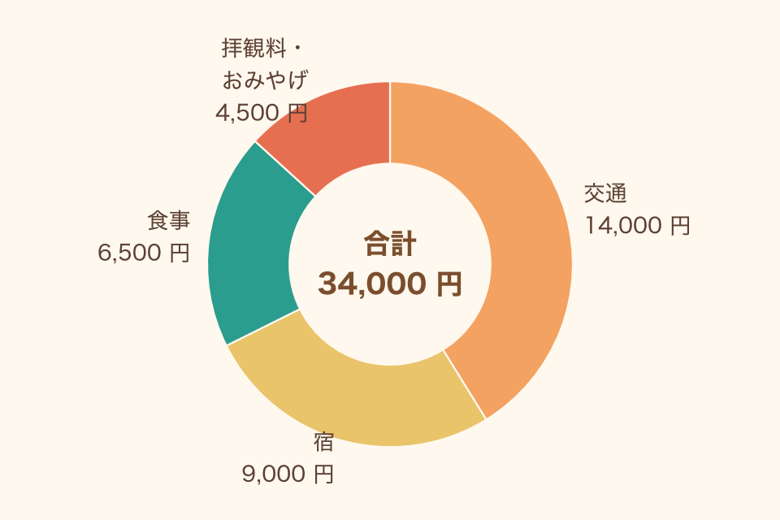

秋の京都 1 泊 2 日のしおり
2026/11/21（土）〜 22（日）
1 日目の行程
朝は早めです．8:10 に京都駅の中央口に集合してください
| 時間 | 場所 | ひとこと |
|---|---|---|
| 8:10 | 京都駅 中央口 | 遅れるときは必ず連絡を |
| 9:00 | 清水寺 | 紅葉の見ごろ．坂が多いです |
| 12:00 | 二年坂でお昼 | 各自で好きなお店へ |
| 14:30 | 南禅寺・哲学の道 | ゆっくり歩いて 40 分ほど |
| 17:30 | 宿にチェックイン | 夕食は 19:00 から |
持ち物
歩く時間が長いので，靴と上着を忘れずに
- 歩きやすい靴
- 上着（朝晩は 10℃ 前後）
- 折りたたみ傘
- 交通系 IC カード
- 保険証
- 常備薬
あると便利：モバイルバッテリー，小さめのリュック
予算（1 人あたり）
合計は約 34,000 円です．交通費は事前に集めます

交通は往復の新幹線，宿は 1 泊 2 食つき．金額はすべて架空です